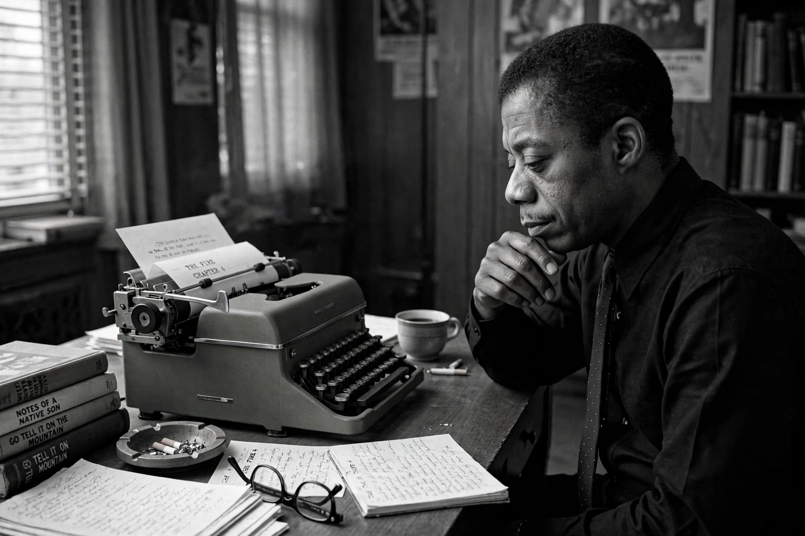

James Baldwin
 | |
| Born | James Arthur Jones, August 2, 1924, New York City, U.S. |
|---|---|
| Died | November 30, 1987 (aged 63), Saint-Paul-de-Vence, France |
| Occupation | Novelist, playwright, essayist |
| Notable works | Go Tell It on the Mountain (1953), Notes of a Native Son (1955), Giovanni's Room (1956), The Fire Next Time (1963) |
James Arthur Baldwin (born James Arthur Jones; August 2, 1924 – November 30, 1987) was an American writer and civil rights activist. He garnered acclaim for his essays, novels, plays, and poems, and his work explored race, sexuality, and class in mid-twentieth-century America.
Early life
Baldwin was born in Harlem, New York City, the eldest of nine children. He never knew his biological father and was raised by his mother, Emma Berdis Jones, and his stepfather, David Baldwin, a factory worker and Baptist preacher. As a teenager, Baldwin served as a youth minister in a Harlem Pentecostal church. He attended De Witt Clinton High School in the Bronx, where he worked on the school magazine with photographer Richard Avedon.
Career
In 1948, frustrated by American racism, Baldwin moved to Paris with the help of a Rosenwald Fellowship. His first novel, Go Tell It on the Mountain (1953), a semi-autobiographical story of a young man growing up in Harlem, is now considered an American classic. His second novel, Giovanni's Room (1956), caused controversy for its explicit treatment of homosexuality.
Baldwin became a prominent voice of the American civil rights movement. His essay collections Notes of a Native Son (1955) and Nobody Knows My Name (1961), and especially the two-essay volume The Fire Next Time (1963), made him a leading literary spokesman on race. He marched in the South, debated across the country, and was featured on the cover of Time magazine in 1963.
Later life and death
Baldwin spent much of his later life in Saint-Paul-de-Vence in the south of France, where he wrote No Name in the Street (1972), If Beale Street Could Talk (1974), and Just Above My Head (1979). He died of stomach cancer on November 30, 1987, aged 63. His unfinished manuscript Remember This House was adapted into the Academy Award-nominated documentary I Am Not Your Negro (2016).